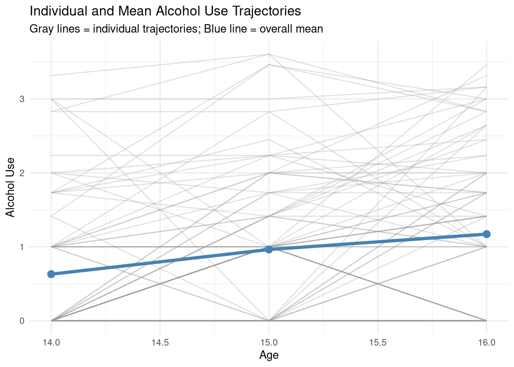
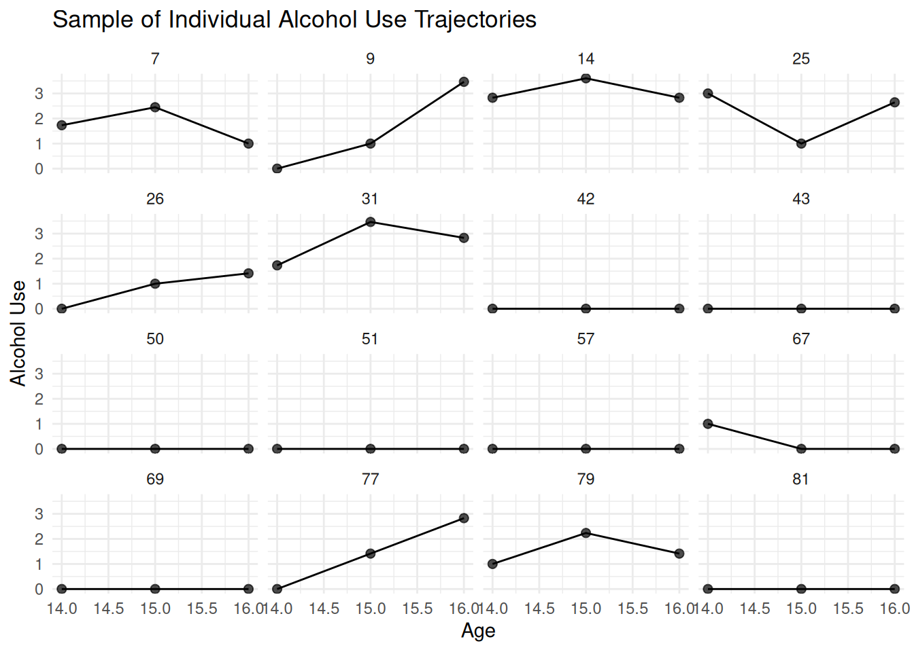
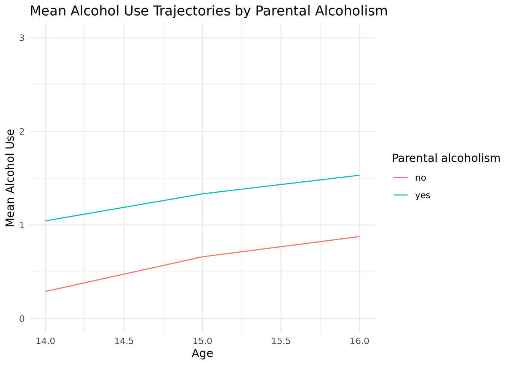
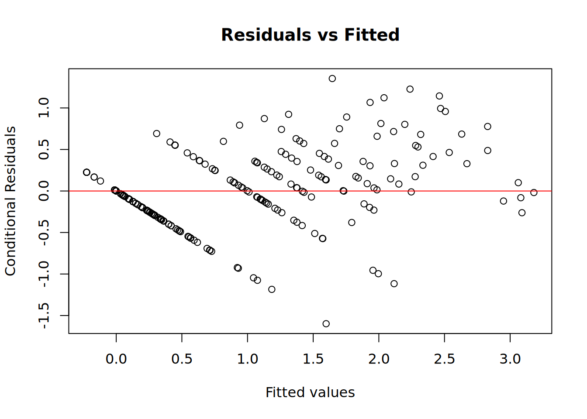
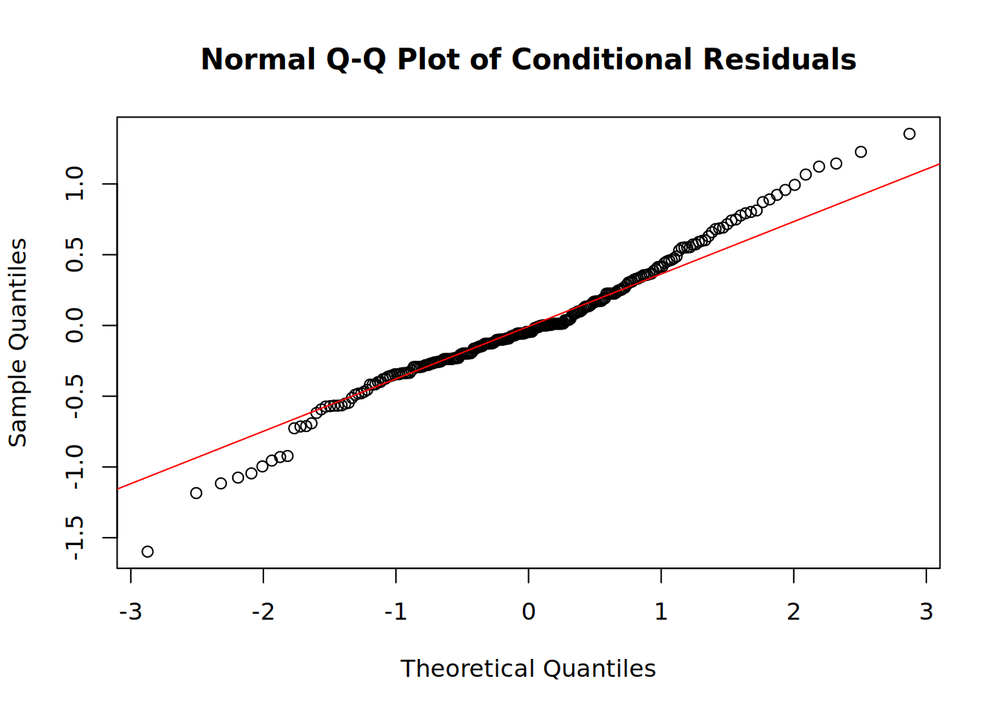

# Check whether pacman is available and install if needed
options(repos = c(CRAN = "https://cloud.r-project.org"))
if (!requireNamespace("pacman", quietly = TRUE)) install.packages("pacman")
# Use pacman to install (if needed) and load the required packages
pacman::p_load(haven, dplyr, ggplot2, emmeans, lmerTest)Beyond MLR Lab 6: Longitudinal data analysis
Adolescent alcohol use data
In this lab, we will explore the analysis of longitudinal data using linear mixed-effects models. Longitudinal data involve repeated measurements taken on the same subjects over time, allowing us to study changes in outcomes within individuals.
The dataset we will use comes from a study of adolescent alcohol use, featured in Singer and Willett’s Applied Longitudinal Data Analysis: Modeling Change and Event Occurrence (2003). This study tracked 82 adolescents over three years (ages 14, 15, and 16) to examine how their alcohol use changed over time.
Dataset description
The dataset contains the following variables:
- Outcome variable:
alcuse: Continuous measure of alcohol use based on various survey items.
- Grouping variable:
id: Unique identifier for each adolescent in the study.
- Covariates:
coa: Dichotomous variable indicating parental alcoholism (1 = yes, 0 = no).sex: Dichotomous variable indicating sex.peer: Continuous measure of peer alcohol use, assessed at age 14.age: Numerical variable representing the age of the adolescent at each time point (14, 15, 16).
Research question
In this lab, we are going to address the following research question:
What factors predict adolescent alcohol use and its change over time? Specifically, do parental alcoholism, sex, and peer alcohol use influence baseline levels and trajectories of alcohol use from ages 14 to 16?
Data import, cleaning, and inspection
# Load the adolescent alcohol use data
# Note: the call below assumes the dataset is placed in the 'data' folder
# directly above the root folder of the project. Update the path as needed.
alcohol_data <- read_sav("data/alcoholpp.sav")
# Convert labelled variables (dbl+lbl) to factors using their value labels
# and set effects coding (contr.sum) for interpretation
alcohol_data <- alcohol_data |>
mutate(
coa = as_factor(coa),
sex = as_factor(sex)
)
# Use effects coding for the categorical variables
options(contrasts = c("contr.sum", "contr.poly"))
# Inspect the structure of the dataset
str(alcohol_data)tibble [246 × 6] (S3: tbl_df/tbl/data.frame)
$ id : num [1:246] 1 1 1 2 2 2 3 3 3 4 ...
..- attr(*, "label")= chr "Subejct ID"
..- attr(*, "format.spss")= chr "F2.0"
$ coa : Factor w/ 2 levels "no","yes": 2 2 2 2 2 2 2 2 2 2 ...
..- attr(*, "label")= chr "Parental alcoholism"
$ peer : num [1:246] 1.265 1.265 1.265 0.894 0.894 ...
..- attr(*, "label")= chr "Peer alcohol use, assessed at age 14"
..- attr(*, "format.spss")= chr "F8.2"
$ sex : Factor w/ 2 levels "female","male": 1 1 1 2 2 2 2 2 2 2 ...
..- attr(*, "label")= chr "Sex"
$ alcuse: num [1:246] 1.73 2 2 0 0 ...
..- attr(*, "label")= chr "Continuous measure of alcohol use based on various survey items"
..- attr(*, "format.spss")= chr "F3.0"
$ age : num [1:246] 14 15 16 14 15 16 14 15 16 14 ...
..- attr(*, "label")= chr "Age"
..- attr(*, "format.spss")= chr "F3.0"Exploratory data analysis
Individual trajectories of alcohol use
We will start by examining the individual trajectories of alcohol use over time. One way to achieve this is a facet plot, which displays each individual’s trajectory in a separate subplot. In this case, however, the dataset consists of 82 individuals, making it impractical to display all trajectories. We therefore take a random sample of 16 individuals for visualization.
set.seed(123) # Set seed for reproducibility
# Sample 16 unique individuals
sampled_ids <- sample(1:82, 16)
# Filter dataset for the sampled IDs and plot
alcohol_data |>
filter(id %in% sampled_ids) |>
ggplot(aes(x = age, y = alcuse)) +
geom_line() + # Add trajectories (lines)
geom_point(size = 2, alpha = 0.7) + # Add individual data points (dots)
facet_wrap(~ id) + # Create a subplot for each individual
labs(
title = "Individual Alcohol Use Trajectories with Data Points",
x = "Age",
y = "Alcohol Use"
) +
theme_minimal()
Observations:
- Many adolescents report no alcohol use (
alcuse = 0) across all time points. - For adolescents who do report alcohol use, the trajectories vary, with some increasing, decreasing, or remaining relatively stable over time.
- This variability underscores the need for statistical models, such as linear mixed-effects models, to account for differences both within and between individuals.
WarningDisclaimer
The dataset used in this lab is zero-inflated, with a large number of zero alcohol use values. While linear mixed-effects models are not necessarily the best approach for analyzing such data, we will use them in this lab to focus on the methodology. The results derived in this lab are intended for educational purposes only.
Overall mean trajectory
Before examining how alcohol use trajectories differ by predictor variables, we first explore the overall mean trajectory to assess the shape of change over time.
# Compute the overall mean alcohol use by age
mean_trajectory <- alcohol_data |>
group_by(age) |>
summarise(mean_alcuse = mean(alcuse, na.rm = TRUE), .groups = "drop")
# Plot the overall mean trajectory
ggplot(mean_trajectory, aes(x = age, y = mean_alcuse)) +
geom_line(linewidth = 1) +
geom_point(size = 3) +
labs(
title = "Overall Mean Alcohol Use Trajectory",
x = "Age",
y = "Mean Alcohol Use"
) +
ylim(0, 1.5) +
theme_minimal()
Mean trajectories by parental alcoholism
Next, we will examine the mean trajectories of alcohol use by parental alcoholism (coa). This will provide an overview of how this variable relates to alcohol use over time.
# Compute the mean alcohol use by age, and COA status
mean_alcuse <- alcohol_data |>
group_by(age, coa) |>
summarise(mean_alcuse = mean(alcuse, na.rm = TRUE), .groups = "drop")
# Plot the mean trajectories by COA
ggplot(mean_alcuse, aes(x = age, y = mean_alcuse, color = coa)) +
geom_line() +
labs(
title = "Mean Alcohol Use Trajectories by Parental Alcoholism",
x = "Age",
y = "Mean Alcohol Use"
) +
ylim(0, 3) +
theme_minimal()
Assessing the intraclass correlation coefficient (ICC)
Before building more complex models, we first assess the intraclass correlation coefficient (ICC) to understand how much of the variance in alcohol use is attributable to differences between individuals. In longitudinal data analysis, we calculate the ICC from a model that includes time as a fixed effect.
Modeling time flexibly for ICC calculation
Since we have only 3 time points (ages 14, 15, and 16), we can model time with maximum flexibility by including both linear and quadratic terms. This saturated representation uses 2 degrees of freedom to perfectly fit the 3 observed means, which is equivalent to treating time as a categorical variable. However, we prefer the continuous representation because it:
- Maintains interpretable coefficients (linear and quadratic change)
- Allows us to extend the model to include random slopes later (which is not identifiable with categorical time and one observation per person-time combination)
- Provides a natural framework for growth modeling
# Center age at 14 for interpretability
alcohol_data$age_centered <- alcohol_data$age - 14
# Create quadratic term
alcohol_data$age_centered_sq <- alcohol_data$age_centered^2
# Fit a random intercept model with linear and quadratic time
icc_model <- lmer(alcuse ~ age_centered + age_centered_sq + (1 | id), data = alcohol_data)
summary(icc_model)Linear mixed model fit by REML. t-tests use Satterthwaite's method [
lmerModLmerTest]
Formula: alcuse ~ age_centered + age_centered_sq + (1 | id)
Data: alcohol_data
REML criterion at convergence: 656.5
Scaled residuals:
Min 1Q Median 3Q Max
-2.16283 -0.63955 0.03436 0.46442 2.68685
Random effects:
Groups Name Variance Std.Dev.
id (Intercept) 0.5960 0.7720
Residual 0.4932 0.7023
Number of obs: 246, groups: id, 82
Fixed effects:
Estimate Std. Error df t value Pr(>|t|)
(Intercept) 0.63047 0.11525 151.98797 5.470 1.81e-07 ***
age_centered 0.39568 0.19773 162.00000 2.001 0.047 *
age_centered_sq -0.06251 0.09498 162.00000 -0.658 0.511
---
Signif. codes: 0 '***' 0.001 '**' 0.01 '*' 0.05 '.' 0.1 ' ' 1
Correlation of Fixed Effects:
(Intr) ag_cnt
age_centerd -0.396
ag_cntrd_sq 0.275 -0.961Model building
We will now follow a systematic model building approach for longitudinal data, as outlined in the principles at the end of this lab. We start with a saturated fixed-effects structure that includes all predictors and their interactions with time, combined with a complex random-effects structure (random intercept and random slope).
Step 1: Fit the saturated model
We begin by fitting a model that includes all available predictors (coa, sex, peer) and their interactions with time (age_centered and age_centered_sq). For the random effects, we include a random intercept and a random linear slope for time.
# Center peer at its mean for interpretability
alcohol_data$peer_centered <- alcohol_data$peer - mean(alcohol_data$peer, na.rm = TRUE)
# Fit the saturated model with all predictors and their interactions with time
# Note: Random effects include only intercept and linear slope, not quadratic slope
saturated_model <- lmer(
alcuse ~ (age_centered + age_centered_sq) * (coa + sex + peer_centered) + (1 + age_centered | id),
data = alcohol_data
)
summary(saturated_model)Linear mixed model fit by REML. t-tests use Satterthwaite's method [
lmerModLmerTest]
Formula:
alcuse ~ (age_centered + age_centered_sq) * (coa + sex + peer_centered) +
(1 + age_centered | id)
Data: alcohol_data
REML criterion at convergence: 617.7
Scaled residuals:
Min 1Q Median 3Q Max
-2.89184 -0.49756 -0.03724 0.42170 2.35831
Random effects:
Groups Name Variance Std.Dev. Corr
id (Intercept) 0.2715 0.5210
age_centered 0.1405 0.3749 -0.09
Residual 0.3327 0.5768
Number of obs: 246, groups: id, 82
Fixed effects:
Estimate Std. Error df t value Pr(>|t|)
(Intercept) 0.65828 0.08631 93.60469 7.627 1.96e-11
age_centered 0.39260 0.16852 101.42781 2.330 0.02180
age_centered_sq -0.06347 0.07845 78.00121 -0.809 0.42096
coa1 -0.29667 0.08777 93.60469 -3.380 0.00106
sex1 -0.04621 0.08836 93.60469 -0.523 0.60223
peer_centered 0.65906 0.12332 93.60469 5.344 6.37e-07
age_centered:coa1 0.06307 0.17136 101.42781 0.368 0.71359
age_centered:sex1 0.12632 0.17252 101.42781 0.732 0.46576
age_centered:peer_centered 0.11021 0.24078 101.42782 0.458 0.64815
age_centered_sq:coa1 -0.02222 0.07977 78.00121 -0.279 0.78135
age_centered_sq:sex1 -0.12795 0.08031 78.00121 -1.593 0.11515
age_centered_sq:peer_centered -0.10915 0.11208 78.00122 -0.974 0.33316
(Intercept) ***
age_centered *
age_centered_sq
coa1 **
sex1
peer_centered ***
age_centered:coa1
age_centered:sex1
age_centered:peer_centered
age_centered_sq:coa1
age_centered_sq:sex1
age_centered_sq:peer_centered
---
Signif. codes: 0 '***' 0.001 '**' 0.01 '*' 0.05 '.' 0.1 ' ' 1
Correlation of Fixed Effects:
(Intr) ag_cnt ag_cn_ coa1 sex1 pr_cnt ag_cntrd:c1
age_centerd -0.438
ag_cntrd_sq 0.303 -0.931
coa1 -0.101 0.044 -0.031
sex1 0.034 -0.015 0.010 -0.090
peer_centrd -0.023 0.010 -0.007 0.178 -0.231
ag_cntrd:c1 0.044 -0.101 0.094 -0.438 0.040 -0.078
ag_cntrd:s1 -0.015 0.034 -0.032 0.040 -0.438 0.101 -0.090
ag_cntrd:p_ 0.010 -0.023 0.022 -0.078 0.101 -0.438 0.178
ag_cntrd_sq:c1 -0.031 0.094 -0.101 0.303 -0.027 0.054 -0.931
ag_cntrd_sq:s1 0.010 -0.032 0.034 -0.027 0.303 -0.070 0.084
ag_cntrd_:_ -0.007 0.022 -0.023 0.054 -0.070 0.303 -0.166
ag_cntrd:s1 ag_c:_ ag_cntrd_sq:c1 ag_cntrd_sq:s1
age_centerd
ag_cntrd_sq
coa1
sex1
peer_centrd
ag_cntrd:c1
ag_cntrd:s1
ag_cntrd:p_ -0.231
ag_cntrd_sq:c1 0.084 -0.166
ag_cntrd_sq:s1 -0.931 0.215 -0.090
ag_cntrd_:_ 0.215 -0.931 0.178 -0.231 Step 2: Determine the random-effects structure
Before simplifying the fixed effects, we first determine whether the random slope for time is necessary. We compare the saturated model (with random slope) against a model with only a random intercept using a likelihood ratio test. Since we are comparing random effects, we retain REML estimation.
# Fit a model with only random intercept (same fixed effects as saturated model)
random_intercept_only <- lmer(
alcuse ~ (age_centered + age_centered_sq) * (coa + sex + peer_centered) + (1 | id),
data = alcohol_data
)
# Compare models using likelihood ratio test
anova(random_intercept_only, saturated_model, refit = FALSE)Data: alcohol_data
Models:
random_intercept_only: alcuse ~ (age_centered + age_centered_sq) * (coa + sex + peer_centered) + (1 | id)
saturated_model: alcuse ~ (age_centered + age_centered_sq) * (coa + sex + peer_centered) + (1 + age_centered | id)
npar AIC BIC logLik -2*log(L) Chisq Df Pr(>Chisq)
random_intercept_only 14 661.18 710.25 -316.59 633.18
saturated_model 16 649.70 705.79 -308.85 617.70 15.475 2 0.0004361
random_intercept_only
saturated_model ***
---
Signif. codes: 0 '***' 0.001 '**' 0.01 '*' 0.05 '.' 0.1 ' ' 1The manual likelihood ratio test above can be automated using the step() function from the lmerTest package. This function performs backward elimination of random effects using the same likelihood ratio tests, but does so systematically:
# Use step() to test random effects structure
# reduce.random = TRUE: test and potentially remove random effects
# reduce.fixed = FALSE: keep all fixed effects unchanged
step_random <- step(saturated_model, reduce.random = TRUE, reduce.fixed = FALSE)
# Extract the model with the final random effects structure
model_with_final_random <- get_model(step_random)The step() function will yield the same result as the manual test above. Using step() is particularly useful when you have multiple random effects to test.
Step 3: Simplify the fixed-effects structure
Now that we have determined the appropriate random-effects structure, we use the model from Step 2 as the starting point to simplify the fixed effects. By setting reduce.fixed = TRUE and reduce.random = FALSE, the function will only eliminate non-significant fixed effects while keeping the random effects structure unchanged.
# Use step() to simplify fixed effects only
# Start with the model that has the final random effects structure from Step 2
# reduce.fixed = TRUE: test and potentially remove fixed effects
# reduce.random = FALSE: keep the random effects structure unchanged
step_result <- step(model_with_final_random, reduce.fixed = TRUE, reduce.random = FALSE)
print(step_result)Backward reduced random-effect table:
Eliminated npar logLik AIC LRT
<none> 16 -308.85 649.70
age_centered in (1 + age_centered | id) 0 14 -316.59 661.18 15.475
Df Pr(>Chisq)
<none>
age_centered in (1 + age_centered | id) 2 0.0004361 ***
---
Signif. codes: 0 '***' 0.001 '**' 0.01 '*' 0.05 '.' 0.1 ' ' 1
Backward reduced fixed-effect table:
Degrees of freedom method: Satterthwaite
Eliminated Sum Sq Mean Sq NumDF DenDF F value
age_centered_sq:coa 1 0.0258 0.0258 1 78.001 0.0776
age_centered:coa 2 0.0292 0.0292 1 78.000 0.0888
age_centered:peer_centered 3 0.0529 0.0529 1 102.727 0.1607
age_centered:sex 4 0.2557 0.2557 1 104.082 0.7847
age_centered_sq:peer_centered 5 0.8008 0.8008 1 103.354 2.4631
age_centered 0 1.8515 1.8515 1 105.359 5.6510
coa 0 4.5350 4.5350 1 78.000 13.8417
peer_centered 0 11.8110 11.8110 1 78.000 36.0492
age_centered_sq:sex 0 2.7814 2.7814 1 104.451 8.4893
Pr(>F)
age_centered_sq:coa 0.7813517
age_centered:coa 0.7665060
age_centered:peer_centered 0.6893322
age_centered:sex 0.3777385
age_centered_sq:peer_centered 0.1196051
age_centered 0.0192490 *
coa 0.0003732 ***
peer_centered 5.736e-08 ***
age_centered_sq:sex 0.0043701 **
---
Signif. codes: 0 '***' 0.001 '**' 0.01 '*' 0.05 '.' 0.1 ' ' 1
Model found:
alcuse ~ age_centered + age_centered_sq + coa + sex + peer_centered + (1 + age_centered | id) + age_centered_sq:sex# Extract the final model
final_model <- get_model(step_result)The step() function performs backward elimination of fixed effects, adhering to important model building principles such as the marginality principle (lower-order terms are retained if higher-order terms involving them remain in the model) and uses F-tests with Satterthwaite approximation for hypothesis testing.
Step 4: Final model and interpretation
Based on the model building process, we arrive at our final model. We can now interpret the results in detail:
# Display the final model summary
summary(final_model)Linear mixed model fit by REML. t-tests use Satterthwaite's method [
lmerModLmerTest]
Formula: alcuse ~ age_centered + age_centered_sq + coa + sex + peer_centered +
(1 + age_centered | id) + age_centered_sq:sex
Data: alcohol_data
REML criterion at convergence: 606.9
Scaled residuals:
Min 1Q Median 3Q Max
-2.79283 -0.44841 -0.07872 0.42465 2.36630
Random effects:
Groups Name Variance Std.Dev. Corr
id (Intercept) 0.2754 0.5248
age_centered 0.1421 0.3770 -0.10
Residual 0.3276 0.5724
Number of obs: 246, groups: id, 82
Fixed effects:
Estimate Std. Error df t value Pr(>|t|)
(Intercept) 0.657363 0.086099 93.775899 7.635 1.87e-11 ***
age_centered 0.395675 0.166446 105.358949 2.377 0.019249 *
age_centered_sq -0.064531 0.077420 80.810660 -0.834 0.407004
coa1 -0.278077 0.074743 78.000349 -3.720 0.000373 ***
sex1 -0.009545 0.079181 80.812280 -0.121 0.904346
peer_centered 0.630568 0.105023 78.000349 6.004 5.74e-08 ***
age_centered_sq:sex1 -0.082803 0.028419 104.451239 -2.914 0.004370 **
---
Signif. codes: 0 '***' 0.001 '**' 0.01 '*' 0.05 '.' 0.1 ' ' 1
Correlation of Fixed Effects:
(Intr) ag_cnt ag_cn_ coa1 sex1 pr_cnt
age_centerd -0.435
ag_cntrd_sq 0.300 -0.930
coa1 -0.087 0.000 0.000
sex1 0.030 0.000 -0.003 -0.086
peer_centrd -0.020 0.000 0.000 0.178 -0.219
ag_cntrd_:1 -0.007 0.000 0.009 0.000 -0.311 0.000Model diagnostics
After fitting the final model, it is important to check the modeling assumptions. We focus on checking the assumptions regarding the conditional residuals, which represent the deviation of the observed data from the model’s predictions after accounting for both fixed and random effects. These residuals can be considered estimates of the errors \(\epsilon_{ij}\), which are assumed to be normally distributed with a mean of zero and constant variance.
To check these assumptions, we generate diagnostic plots:
- Residuals vs. Fitted Plot: Checks for homoscedasticity (constant variance) and linearity
- Normal Q-Q Plot: Assesses whether the residuals follow a normal distribution
# Extract conditional residuals from the final model
residuals_cond <- resid(final_model)
# Residuals vs Fitted
plot(fitted(final_model), residuals_cond,
main = "Residuals vs Fitted",
xlab = "Fitted values",
ylab = "Conditional Residuals")
abline(h = 0, col = "red")
# Normal Q-Q Plot
qqnorm(residuals_cond, main = "Normal Q-Q Plot of Conditional Residuals")
qqline(residuals_cond, col = "red")
Model building principles for longitudinal data analysis
Model building for longitudinal data analysis follows a systematic approach to ensure that the final model is both parsimonious and adequately represents the data. The process typically involves the following steps:
Start with a saturated fixed-effects structure and a complex random-effects structure
- A saturated fixed-effects structure includes all plausible predictors and their interactions based on theoretical considerations and prior knowledge. This ensures that no potentially important effect is excluded at the outset.
- A complex random-effects structure allows for a flexible representation of variability in the data. For example, random intercepts and random slopes are included to account for between-subject variability and other grouping factors.
This initial specification provides a robust starting point for model refinement, ensuring the inclusion of all meaningful variability in the model.
Determine the appropriate random-effects structure
- Simplify the random-effects structure by comparing models with different random-effects terms using likelihood ratio tests (LRTs).
- Importantly, these comparisons are made without refitting the models using maximum likelihood (ML). Restricted maximum likelihood (REML) is retained during this step to ensure accurate estimation of variance components.
- Remove unnecessary random-effects terms to avoid overfitting while retaining terms that account for substantial variability in the data.
Simplify the fixed-effects structure
- Starting from the saturated fixed-effects structure combined with the final reduced random-effects structure, iteratively remove non-significant fixed effects.
- There are two approaches for testing fixed effects:
- F-tests with approximate degrees of freedom (e.g., Satterthwaite or Kenward-Roger approximation): Used by the
step()function in this lab. Does not require refitting models and retains REML estimation. - Likelihood ratio tests (LRTs): When using LRTs for fixed effects testing, models must be refitted using maximum likelihood (ML) rather than REML. This ensures correct inference for hypothesis testing and comparison of nested models.
- F-tests with approximate degrees of freedom (e.g., Satterthwaite or Kenward-Roger approximation): Used by the
- Once the final fixed-effects structure is determined using either approach, the model can be refitted using REML for final parameter estimation.